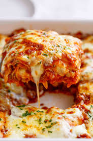

Ingredients
- 9 lasagna noodles
- 1-1/4 pounds
- 3/4 pound ground beef
- 1 medium onion, diced
- 3 garlic cloves, minced
- 2 cans (one 28 ounces, one 15 ounces) crushed tomatoes
- 2 cans (6 ounces each) tomato paste
- 2/3 cup water
- 2 to 3 tablespoons sugar
- 3 tablespoons plus 1/4 cup minced fresh parsley, divided
- 2 teaspoons dried basil
- 3/4 teaspoon fennel seed
- 3/4 teaspoon salt, divided
- 1/4 teaspoon coarsely ground pepper
- 1 large egg, lightly beaten
- 1 carton (15 ounces) ricotta cheese
- 4 cups shredded part-skim mozzarella cheese
- 3/4 cup grated Parmesan cheese
Directions
- Cook noodles according to package directions; drain. Meanwhile, in a Dutch oven, cook sausage, beef and onion over medium heat 8-10 minutes or until meat is no longer pink, breaking up meat into crumbles. Add garlic; cook 1 minute. Drain.
- Stir in tomatoes, tomato paste, water, sugar, 3 tablespoons parsley, basil, fennel, 1/2 teaspoon salt and pepper; bring to a boil. Reduce heat; simmer, uncovered, 30 minutes, stirring occasionally.
- In a small bowl, mix egg, ricotta cheese, and remaining parsley and salt.
- Preheat oven to 375°. Spread 2 cups meat sauce into an uncreased 13x9-in. baking dish. Layer with three noodles and a third of the ricotta mixture. Sprinkle with 1 cup mozzarella cheese and 2 tablespoons Parmesan cheese. Repeat layers twice. Top with remaining meat sauce and cheeses (dish will be full).
- Bake, covered, 25 minutes. Bake, uncovered, 25 minutes longer or until bubbly. Let stand 15 minutes before serving.
